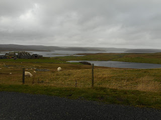
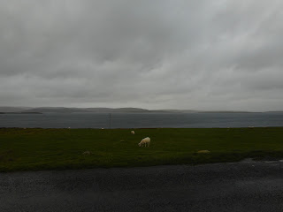

Lunna House, Shetland, overlooking the anchorage
This week
began 9 days ago. I was self-isolating, having tested positive a
couple of days before, and I’d just made the terrible mistake of saying aloud
to Francis how conducive I hoped this was going to be to a quiet spell of writing.
I’d been playing my usual game of not exactly mentioning the current project,
clocking up a few hundred words here and there and hoping they would turn into something.
They’d crawled nicely past the 30,000 sticky point and my characters had anchored
in the evocative West Lunna Voe in Shetland. They and I were both eager to know
what would happen to them next. A spell of enforced seclusion seemed the ideal opportunity to find out.
What actually happened was a message from Delyth, a dedicated, passionate, dementia nurse in Wales introducing Liz Saville Roberts MP who was offering to support the John's Campaign on-going struggle for the rights of people in hospitals and care homes to maintain their relationship with their families. Then a message from Liz herself. I don’t really want to look up my email reply; I know the flood gates of my anger at the extraordinarily restrictive and damaging policies in Wales – and the equally extraordinary lack of public protest – erupted onto the very people who’d just popped their heads above the parapet. I lambasted the Welsh government, Welsh NHS, Public Health Wales, their Care Inspectorate, their unfulfilled policies …
What I was really doing of course was trying to defend my personal yearning to be hidden in that Shetland anchorage.
 |
| Islands of adventure? |
Later that night I received one of those desperate, un-ignorable appeals from a daughter in Yorkshire. The hospital trust where her mother is a patient had closed the ward. Her mother has dementia and a stroke.
Her speech doesn’t make sense. Me not visiting her and being able to speak for her will be terrible.’
Much of the following day was spent not in Shetland but on Twitter, trying to find why this closure was so draconian -- and who might be able to help regain this daughter’s access. Someone
recently queried the usefulness of Twitter as a medium to discuss health and social
care. I will tell you that I think its utterly bally marvellous. Very soon on that Sunday (yes Sunday) people
were rallying round and talking (off-line) to others to try to discover whether
this was indeed the intended policy and, if so, who could challenge it. By the
end of that day a deputy chief nurse had been reached – admirable woman -- and she was volunteering to help.
But even
deputy chief nurses have their limitations in large trusts with several big
hospitals and a staffing crisis. It would in fact be
several days before the right people spoke to the right people and the message
reached the daughter that she would be welcome to continue caring for her
mother. Meanwhile, in Wales, Liz Saville Roberts was putting pen to
paper and producing the first draft of a beautifully written, compellingly argued
account of her family experience, with an attack on ignorant policies. Stung by remorse as to my initial bad temper, I got to work finding relevant information and references, realising
that during the last seven years while Nicci Gerrard and I have been trundling
around the UK preaching the principles of John’s Campaign we have accumulated
quite a fund of knowledge and contacts -- though not the sort that translates easily into the
writing of sailing adventure fiction.
The following day Liz had finished her article. You can read a shortened version in tomorrow’s Observer newspaper and the full text on our website on Monday. She’d also secured herself a slot for Prime Minister’s Questions on Wednesday. It was no good me venturing out into the Voe. We needed to talk, think, talk, tell people, make the best of this chance.
Meanwhile the Christmas / New Year holiday was over,
offices were opening; there was a letter to Public Health Directors to be sent,
next week’s House of Lords amendment stage for the Health and Social care Bill
to be discussed and the never-ending messages of pain from people
wrongfully separated from those they love and want to care for – and who need
their care.
On
Wednesday, Liz put some of this pain into words. https://video.twimg.com/ext_tw_video/1478763134324199426/pu/vid/648x364/f52xijeJimVNQM1t.mp4?tag=12 Liz Saville Roberts PMQ 5.1.2022
The effect was immediate. You’d think no one had heard it before. Time spent extending the media range felt like time well spent. Here’s the next day follow up on BBC Radio 4 Today programme. https://soundcloud.com/johns-campaign/the-unbalanced-balance?fbclid=IwAR0SMR-a9quTU3rWxBPUH8nmejpGgsJy6m9349voPSOHX7-comTT__DpH04
I wish I thought
so. Meanwhile the tide of individual distress and loss continues its one-way flow. Here’s
another person from the same Yorkshire city:
Last Jan 2021 my husband, who has a diagnosis of young onset Alzheimer’s was admitted to G (specialist hospital for dementia) under a section due to him becoming aggressive.
At
the time he could talk, walk, use the toilet and eat independently. As it was
high covid time I was not allowed to go with him or visit for 5 weeks. They
told me he was constantly looking for me. He became very agitated and aggressive
with staff resulting in him spending over 100 hours in a seclusion room on 11
occasions.
He developed covid, cellulitis in his legs, wouldn’t sleep in his bed, had seizure, allergic reactions, 2 bad falls to his head. Resulting in 4 trips to A&E. When he left to go into a nursing home in May he was doubly incontinent, couldn’t feed himself, lost his speech, and bent forward and poor mobility and required 24 hour 1 to 1 care.
Now that you might think was bad enough. (It’s currently under review in the Trust concerned as such damage was done, unnecessarily.) On Friday morning I had a phone meeting with a dementia co-ordinator in that same city who assured me that every thing which had been happening was a mistake and had been sorted out and dementia carers would be welcomed to continue their help – etc. Almost simultaneously I received a distraught message from this wife. Her husband, in the hospital, was refusing to eat. She had asked to go in and try to feed him. They said no, because that would be a visit – so they were going to put a tube down his nose.
(It’s okay – that one was sorted, with some further expenditure of email and twitter time.)
But truly, how can this be? You’d put a tube down someone’s nose rather than allow his wife to feed him? Because that would be a visit? Really? Then, knowing that, how can one not protest?
Another week
beckons – my nautical adventurers have upped their anchor. I wonder how many miles they’ll manage to achieve before the horizon closes down
again?
 |
| Empty waterscape, louring sky |